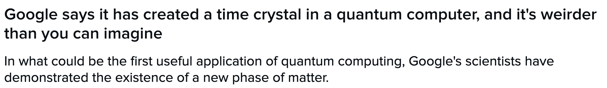
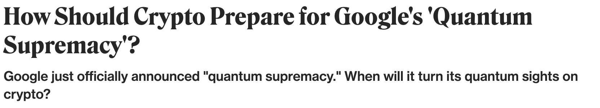
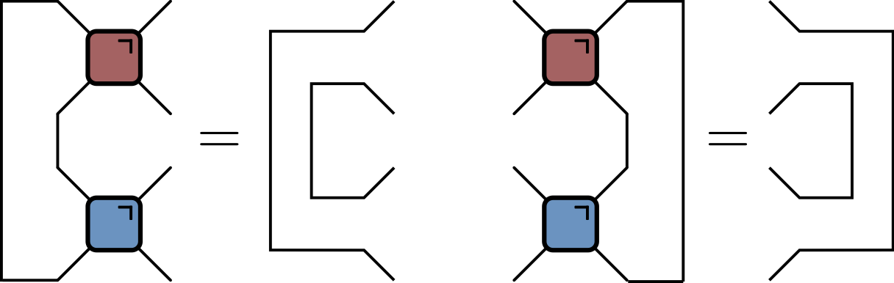

Quantum Circuits

What is a quantum circuit?
- A way to describe operations on quantum state, usually consisting of several qubits (spin 1/2 subsystems)

- \(f\) acts on top five qubits, then \(g\) acts on lower seven
Possible operations

\(H\) (a Hadamard gate) is a single qubit unitary
Also two qubit unitary gates (CNOT here)
Measurements
Why consider circuits?
- Model of universal quantum computation
- How to generate an arbitrary quantum state
- One of several options e.g. measurement-based
- Example of discrete time, many body dynamics
Unitary circuits
(Mostly) concerned with unitary circuits made from unitary gates
Gate is \(n\)-qubit unitary \(U_{s_1\ldots s_n,s'_1,\ldots, s'_n}\)
$$ \sum_{s_1'\ldots s_N'}U_{s_1\ldots s_n,s'_1,\ldots, s'_n} U^\dagger_{s'_1\ldots s'_n,s''_1,\ldots, s''_n}=\delta_{s_1,s_1''}\ldots \delta_{s_N,s_N''} $$
Everything is a tensor
- State of \(N\) qubits expressed in product basis
$$ \ket{\Psi} = \sum_{s_{1:N}\in \{0,1\}^N} \Psi_{s_1\ldots s_N}\ket{s_1}_1\ket{s_2}_2\cdots \ket{s_N}_N $$
Write
$\ket{s_1}_1\ket{s_2}_2\cdots \ket{s_N}_N =\ket{s_1\cdots s_N}=\ket{s_{1:N}}$for brevityOperator on \(N\) qubits has matrix elements
$$ \mathcal{O}_{s_{1:N},s'_{1:N}} = \bra{s_{1:N}}\mathcal{O}\ket{s'_{1:N}} $$
Graphical notation
Unitary gates: one qubit
Multiplication by a Pauli matrix: \(X\), \(Y\), or \(Z\).
General case \(U = a_0\mathbb{1} + \vectorbold{a}\cdot(X,Y,Z)\) with \(|a_0|^2+|\vectorbold{a}|^2=1\)
Other special cases used in quantum information e.g. Hadamard gate
$$ H = \frac{1}{\sqrt{2}}\begin{pmatrix} 1 & 1 \\ 1 & -1 \end{pmatrix} $$
Two qubits
Usually write in basis \(\ket{00}\), \(\ket{01}\), \(\ket{10}\), \(\ket{11}\)
Simplest example: SWAP gate
$$ \operatorname{SWAP}=\left[\begin{array}{llll} 1 & 0 & 0 & 0 \\ 0 & 0 & 1 & 0 \\ 0 & 1 & 0 & 0 \\ 0 & 0 & 0 & 1 \end{array}\right] $$Takes product state to product state in computational basis
\[ \operatorname{SWAP}\ket{10} = \ket{01} \]
Square root of SWAP
$$ \sqrt{\operatorname{SWAP}}=\left[\begin{array}{cccc} 1 & 0 & 0 & 0 \\ 0 & \frac{1}{2}(1+i) & \frac{1}{2}(1-i) & 0 \\ 0 & \frac{1}{2}(1-i) & \frac{1}{2}(1+i) & 0 \\ 0 & 0 & 0 & 1 \end{array}\right] $$
- Generates entanglement
\[ \sqrt{\operatorname{SWAP}}\ket{10} = \frac{1}{2}\left[(1+i)\ket{10}+(1-i)\ket{01}\right] \]
Conserves number of 1s and 0s (in fact fully rotationally invariant)
\(\sqrt{\operatorname{SWAP}}\) and single qubit unitaries are universal gate set
General two qubit unitary
- Any two-qubit unitary \(U\in \mathcal{U(4)}\) can be written
\[\begin{equation} U = e^{i \phi} (u_+ \otimes u_-) V[J_x, J_y, J_z] (v_- \otimes v_+), \end{equation}\]
- \(u_{\pm}, v_{\pm} \in SU(2)\)
\begin{align} V[J_x, J_y, J_z] &= \exp \left[-i\left(J_x \sigma^x \otimes \sigma^x + J_y \sigma^y \otimes \sigma^y+ J_z \sigma^z \otimes \sigma^z\right)\right]\\ &= \begin{bmatrix} e^{-i J_z} \cos(J_-) & 0 & 0 & -i e^{-i J_z \sin(J_-)} \\ 0 & e^{iJ_z} \cos(J_+) & -ie^{i J_z} \sin(J_+) & 0 \\ 0 & -ie^{i J_z} \sin(J_+) & e^{iJ_z} \cos(J_+) & 0 \\ -i e^{-i J_z \sin(J_-)} & 0 & 0 & e^{-i J_z} \cos(J_-) \\ \end{bmatrix} \end{align}
- 16 parameters!
Gate notation
Unitary condition

Time evolution: single qubit gates
Time evolution operator \(U=\exp(-iHt)\)
If \(H=\sum_j h_j\) a sum of single qubit terms
\[ U = \exp(-iHt) = \prod_j \exp(-ih_j) = \prod_j U_j \] \[ U_j=\mathbb{1}\otimes \ldots \otimes\mathbb{1} \otimes \overbrace{u_j}^{j\text{th factor}} \ldots \otimes\mathbb{1} \]
Two qubit gates
- Simplest example of two qubit interaction is exchange Hamiltonian
$$ \begin{align} h_{12} &= J\left[X\otimes X+Y\otimes Y+Z\otimes Z\right] =J\left[X_1X_2+Y_1Y_2 + Z_1Z_2\right]\\ &=2\operatorname{SWAP} - 1 \end{align} $$ $$ U(J) = \exp(-ih_{12}) = e^{iJ}\left[\cos (2J) \mathbb{1} - i\sin (2J) \operatorname{SWAP}\right] $$
- Special cases
\[ U(\pi/4)=\operatorname{SWAP} \] \[ U(\pi/8)=\sqrt{\operatorname{SWAP}} \]
\(H=\sum_{i,j} h_{i,j}\) a sum of two qubit terms with \([h_{i,j},h_{j,k}]\neq 0\)
\(U\neq \prod_{i,j} \exp(-ih_{i,j})\). More complicated!
Suzuki–Trotter expansion: decompose \(H=H_A + H_B\)
\[ U = \exp(-iH) = \left[\exp\left(-\frac{iH}{n}\right)\right]^n \sim \left[e^{-iH_A/n} e^{-iH_B/n}\right]^n \]
Time evolution of chain
\[ H = \sum_j h_{j,j+1} \] \[ H_A = \sum_j h_{2j, 2j+1}\qquad H_B = \sum_j h_{2j-1, 2j} \] \[ e^{-iH_A/n}=\prod_j U_{2j,2j+1}\qquad e^{-iH_B/n} = \prod_j U_{2j-1,2j} \]
Floquet theory: kicked Ising model
- Time dependent Hamiltonian with kicks at \(t=0,1,2,\ldots\).
$$ \begin{aligned} H_{\text{KIM}}(t) = H_\text{I}[\mathbf{h}] + \sum_{m}\delta(t-n)H_\text{K}\\ H_\text{I}[\mathbf{h}]=\sum_{j=1}^L\left[J Z_j Z_{j+1} + h_j Z_j\right],\qquad H_\text{K} &= b\sum_{j=1}^L X_j, \end{aligned} $$
- “Stroboscopic” form of \(U(t)=\mathcal{T}\exp\left[-i\int^t H_{\text{KIM}}(t') dt'\right]\)
$$ \begin{aligned} U(n_+) &= \left[U(1_+)\right]^n,\qquad U(1_-) = K I_\mathbf{h}\\ I_\mathbf{h} &= e^{-iH_\text{I}[\mathbf{h}]}, \qquad K = e^{-iH_\text{K}} \end{aligned} $$
KIM as a circuit

$$ \begin{aligned} \mathcal{K} &= \exp\left[-i b X\right]\\ \mathcal{I} &= \exp\left[-iJ Z_1 Z_2 -i \left(h_1 Z_1 + h_2 Z_2\right)/2\right]. \end{aligned} $$
Locality as a feature of real circuits


Hype
- Sampling from circuits basis of Google’s “quantum supremacy”


Brickwork unitary circuits
- Have causality built in
- More complicated tensor networks → more complicated spacetimes (black holes, AdS, etc.)
Computational complexity
Normally matrix-vector multiplication is \(O(\operatorname{dim}^2)=2^{2N}\)
Gates are sparse so \(O(\operatorname{dim})=2^{N}\), but still exponentially hard
For low depth \(T<N\) move horizontally instead
Expectation values
Evaluate \(\bra{\Psi}\mathcal{O}\ket{\Psi}=\bra{\Psi_0}U^\dagger\mathcal{O}U\ket{\Psi_0}\) for local \(\mathcal{O}\)
If \(\Psi_0\) is product state top and bottom indices match
Folded picture
- Recall unitary condtion
After folding lines correspond to two indices / 4 dimensions
Semicircle denotes \(\delta_{ab}\)
\(\bra{\Psi}\mathcal{O}\ket{\Psi}\) in folded picture
- Emergence of “light cone”
Reduced density matrix
\[ \rho_A = \operatorname{tr}_B\left[\ket{\Psi}\bra{\Psi}\right]=\operatorname{tr}_B\left[U\ket{\Psi_0}\bra{\Psi_0}U^\dagger\right] \]
Schmidt decomposition
- In
$\mathcal{H}=\mathcal{H}_A\otimes\mathcal{H}_B$any state$\Psi_{AB}$can be written
$$ \ket{\Psi_{AB}} = \sum_{\alpha=1}^{\min(\operatorname{dim} \mathcal{H}_A, \operatorname{dim} \mathcal{H}_B)} \lambda_\alpha \ket{u_\alpha}_A\otimes\ket{v_\alpha}_B $$
\(\ket{u_\alpha}\) and \(\ket{v_\alpha}\) orthonormal; \(\lambda_\alpha\geq 0\)
\(\lambda_\alpha\) quantify entanglement between A and B
Apply to reduced density matrix
$$ \begin{align} \rho_A &= \operatorname{tr}_B\left[\ket{\Psi}\bra{\Psi}\right] \\ &= \sum_\alpha \lambda_\alpha^2 \ket{u_\alpha}\bra{u_\alpha} \end{align} $$
- \(p_\alpha\equiv \lambda_\alpha^2\) are the eigenvalues of \(\rho_A\)
Schmidt rank
\(\operatorname{rank}=\min(\operatorname{dim} \mathcal{H}_A, \operatorname{dim} \mathcal{H}_B)=2^{\min(2t-2, N_A)}\)
Here \(t=4\), \(N_A=4\)
Entanglement entropy
- von Neumann entropy of \(\rho_A\)
$$ \begin{align} S_A &= -\operatorname{tr}\left[\rho_A\log \rho_A\right]\\ &=-\sum_\alpha p_\alpha \log p_\alpha \end{align} $$
- Maximum value for equal probabilities \(p_\alpha = \frac{1}{2^{\min(2t-2, N_A)}}\)
\[ S_A \leq \min(2t-2, N_A)\log 2 \]
Entanglement Growth for Self-Dual KIM
- Bertini, Kos, Prosen (2019) found that when \(|J|=|b|=\pi/4\)
\[ \lim_{L\to\infty} S_A =\min(2t-2,N_A)\log 2, \]
- Any \(h_j\); initial \(Z_j\) product state

Entanglement Spectrum
- Rényi entropies depend on eigenvalues of reduced density matrix
$$ S^{(n)}_A = \frac{1}{1-n}\log \text{tr}\left[\rho^n\right]=\frac{1}{1-n}\sum_\alpha p_\alpha^n $$
- For SDKIM have \(2^{\min(2t-2,N_A)}\) non-zero eigenvalues all equal
\[ p_\alpha = \left(\frac{1}{2}\right)^{\min(2t-2,N_A)} \]
Thermalization
After \(N_A/2 + 1\) steps, reduced density matrix is \(\propto \mathbb{1}\)
All expectations (with \(A\)) take on infinite temperature value
Dual unitarity
- Recall KIM has circuit representation
$$ \begin{aligned} \mathcal{K} &= \exp\left[-i b X\right]\\ \mathcal{I} &= \exp\left[-iJ Z_1 Z_2 -i \left(h_1 Z_1 + h_2 Z_2\right)/2\right]. \end{aligned} $$
- At \(|J|=|b|=\pi/4\) has additional property of dual unitarity

Dual unitarity in folded picture
‘KIM’ property

- (\(q=2\) here) Not satisfied by e.g. \(\operatorname{SWAP}\)
‘KIM’ property: folded
\(\rho_A\) via dual unitarity + KIM
- RDM is unitary transformation of
\[ \rho_0=\overbrace{\frac{\mathbb{1}}{2}\otimes \frac{\mathbb{1}}{2} \cdots }^{t-1} \otimes\overbrace{|Z_1\rangle\langle Z_1|\otimes |Z_2\rangle\langle Z_2| \cdots }^{N_A-2t+2 } \otimes \overbrace{\frac{\mathbb{1}}{2}\otimes \frac{\mathbb{1}}{2} \cdots }^{t-1} \]
- RDM has \(2^{\min(2t-2,N_A)}\) non-zero eigenvalues all equal to \(\left(\frac{1}{2}\right)^{\min(2t-2,N_A)}\)
Further reading
- Dual unitary circuits were introduced in
- Gopalakrishnan and Lamacraft for kicked Ising
- Bertini, Kos, and Prosen in general
- Piroli et al discuss more general initial conditions